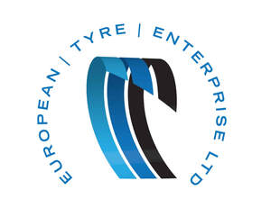

Trade Mark Journal No.2026/007 13 February 2026
UK00004330819 27 January 2026 (7,9,12,17,19,27,35,36,37,39,40,42)

- Class 7
- Motor vehicle exhausts; exhausts for motors and engines; radiators (cooling) for motors and engines; oil filters for motors and engines; air filters for motors and engines; spark plugs; anti-pollution devices for motors and engines; fan belts for motors and engines; carburettors.
- Class 9
- Motor vehicle batteries.
- Class 12
- Tyres; inner tubes and covers for tyres; patches for tyres and inner tubes; repair outfits for inner tubes; apparatus for inflating tyres; wheels; hubcaps and rims for vehicle wheels; parts and fittings for vehicles.
- Class 17
- Articles made of rubber or synthetic rubber; articles made of rubber or synthetic rubber for use in shock absorption; crumb rubber; granules of rubber; recycled rubber.
- Class 19
- Materials for making roads; rubber crumb surfacing for use in play areas and sports tracks.
- Class 27
- Artificial turf.
- Class 35
- Retail and wholesale services connected with the sale of tyres and parts fittings and accessories for vehicles; business administration services; operation of loyalty and incentive schemes; business assistance and consultancy relating to franchising; consultancy and advisory services relating to the aforesaid services.
- Class 36
- Insurance and financial services relating to vehicles.
- Class 37
- Maintenance, servicing and repair of vehicles; maintenance, fitting and repair of parts and fittings of vehicles and tyres; garage services; bicycle and e-bike maintenance, servicing and repair; consultancy and advisory services relating to the aforesaid services.
- Class 39
- Provision of information and consultancy regarding tyres and products related to vehicles; distribution of tyres and products related to vehicles.
- Class 40
- Recycling services; recycling of tyres; manufacture of recycled rubber crumb products.
- Class 42
- Testing and inspection of motor vehicles and parts and fittings therefor; vehicle roadworthiness testing; installation and maintenance services in respect of computer software relating to vehicles; consultancy and advisory services relating to the aforesaid services.
European Tyre Enterprise Limited
Representative: HGF Limited